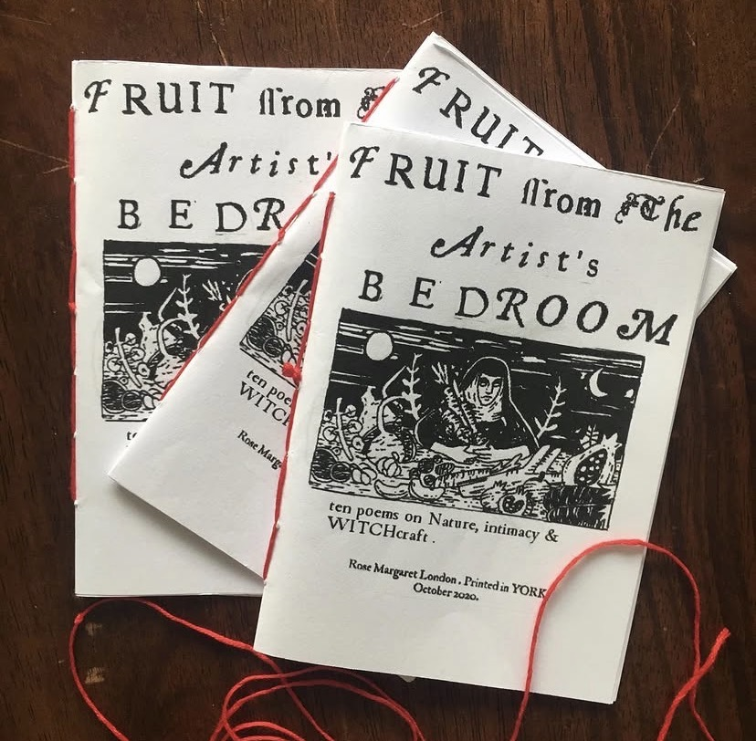
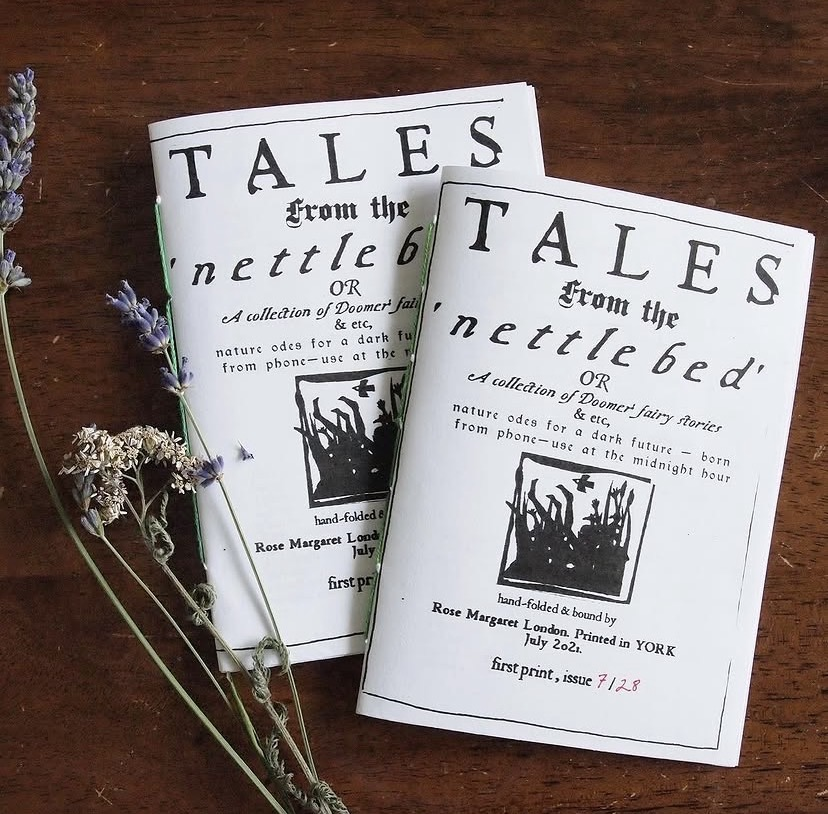
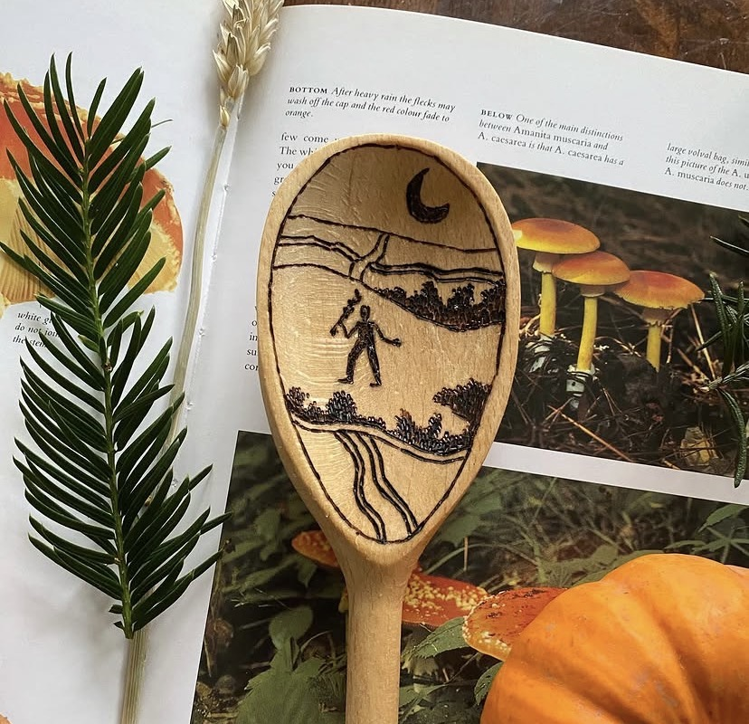
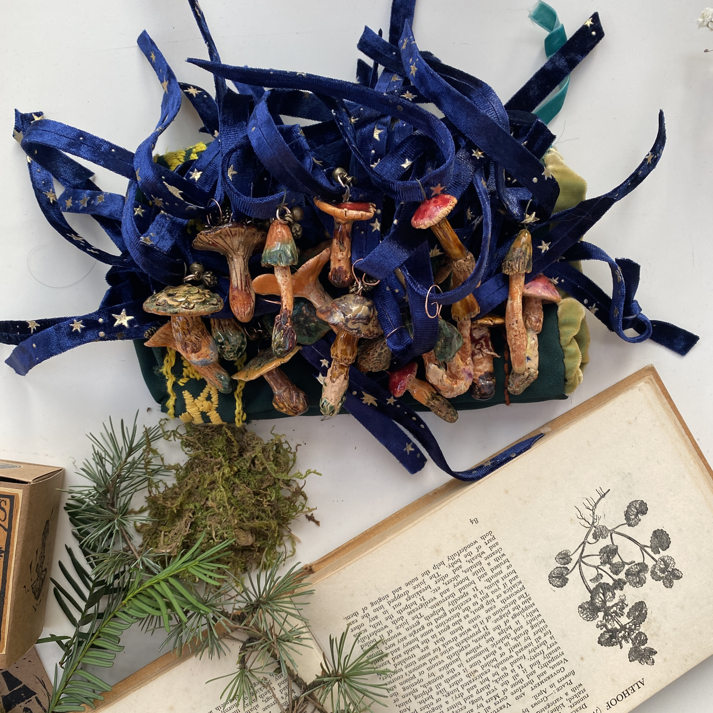
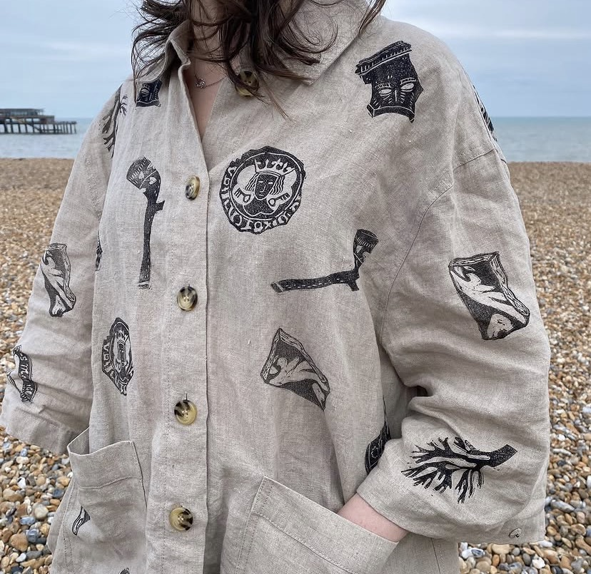
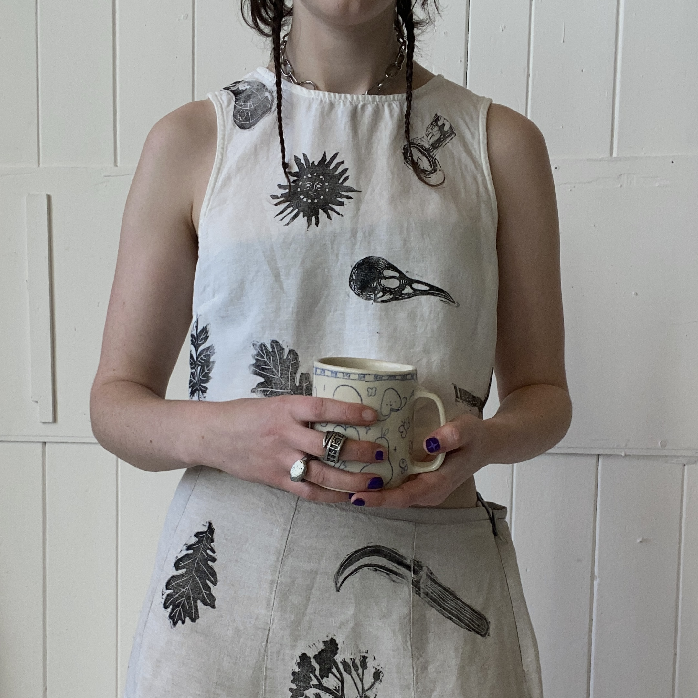
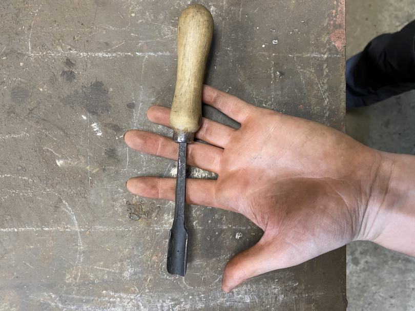
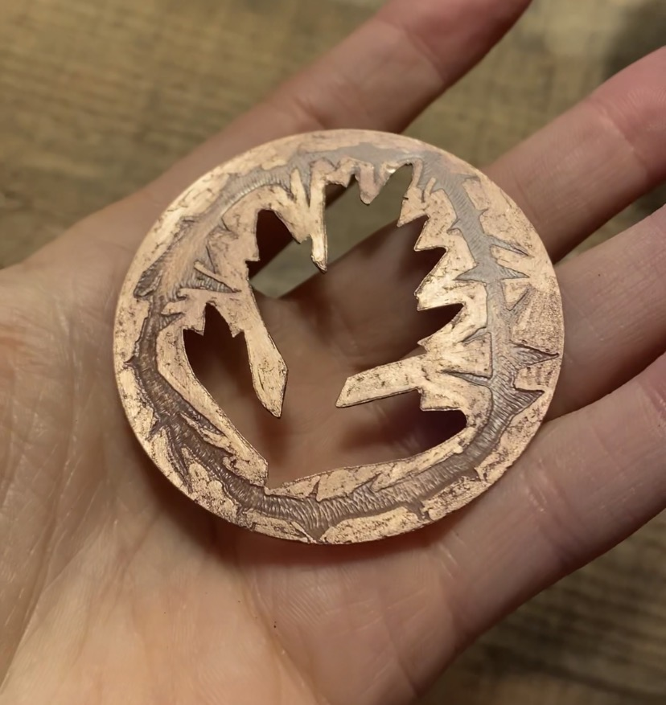

fruit from the artist's bedroom - zine - 2020
my first handbound zine, and the first time i'd drawn something since school
{kind=link}
my first handbound zine, and the first time i'd drawn something since school

tales from the nettle bed - 2021
my second handbound zine, exploring themes of illness and the body and doomerism
{kind=link}
my second handbound zine, exploring themes of illness and the body and doomerism

burnt wooden spoons - 2021
pyrography illustration on kitchen tools - first time i started working with tools
{kind=link}
pyrography illustration on kitchen tools - first time i started working with tools


112 ceramic mushrooms
I handmade and individually glazed 112 ceramic mushrooms, as small ritual objects.
I handmade and individually glazed 112 ceramic mushrooms, as small ritual objects.

hand block printed fabrics - 2023
I started being more interested in functional, wearable or domestic art. I'd spent the last two years making paper prints to sell cheaply to keep my little art business going - but once I took the block to some fabric I felt far more connected to my printmaking practice.
I started being more interested in functional, wearable or domestic art. I'd spent the last two years making paper prints to sell cheaply to keep my little art business going - but once I took the block to some fabric I felt far more connected to my printmaking practice.

hand block printed fabrics - 2023
I made a whole run of garments - tshirts, jackets, trousers, childrends clothes, hair ribbons, patches.
I made a whole run of garments - tshirts, jackets, trousers, childrends clothes, hair ribbons, patches.

pulling down the stones - 2024
While developing a printmaking practice, I had been working as an engineer in a small software company. This was my first digital art project - mapping the story of a walk through data visualisation, creating topography through graphs. Users could interact with the map and explore the shape of a walk across the peak district I undertook in early 2023.
While developing a printmaking practice, I had been working as an engineer in a small software company. This was my first digital art project - mapping the story of a walk through data visualisation, creating topography through graphs. Users could interact with the map and explore the shape of a walk across the peak district I undertook in early 2023.

neolithic adze - 2024
Collograph of a neolithic hand tool, pivoting printmaking practice to focusing on tools
Collograph of a neolithic hand tool, pivoting printmaking practice to focusing on tools

memento mori - reduction lino - 2025
conclusion of my final year at hot bed press printmakers studio - 5 stage reduction lino print, each print with a unique set of colours - print run of 13 in total
conclusion of my final year at hot bed press printmakers studio - 5 stage reduction lino print, each print with a unique set of colours - print run of 13 in total

'Ritual' exhibition at In A Land, Hebden - 2025
Exhibition on the theme of ritual, two etchings and some fabric chosen to exhibit
Exhibition on the theme of ritual, two etchings and some fabric chosen to exhibit

Magpie - Engagement Print Commission - 2025
An A1 linoprint to celebrate the engagement of a friend.
An A1 linoprint to celebrate the engagement of a friend.

forging a printmakers chisel - 2025
my first blacksmithing project which marked this progress from printmaking to blacksmithing. A printmakers chisel, for lino and woodcarving, forged out of a splinter of scrap steel. A tool for myself to use, but also a beautiful work of art - the colours and textures of the metal out the fire, covered with carbon - the hammermarks from my awkward beginners hammer. The colours of the metal as it annealed. I knew what craft I wanted to pursue next after this.
my first blacksmithing project which marked this progress from printmaking to blacksmithing. A printmakers chisel, for lino and woodcarving, forged out of a splinter of scrap steel. A tool for myself to use, but also a beautiful work of art - the colours and textures of the metal out the fire, covered with carbon - the hammermarks from my awkward beginners hammer. The colours of the metal as it annealed. I knew what craft I wanted to pursue next after this.

experiments in copper etching - 2026
Etching copper plates with ferric chloride,
Etching copper plates with ferric chloride,